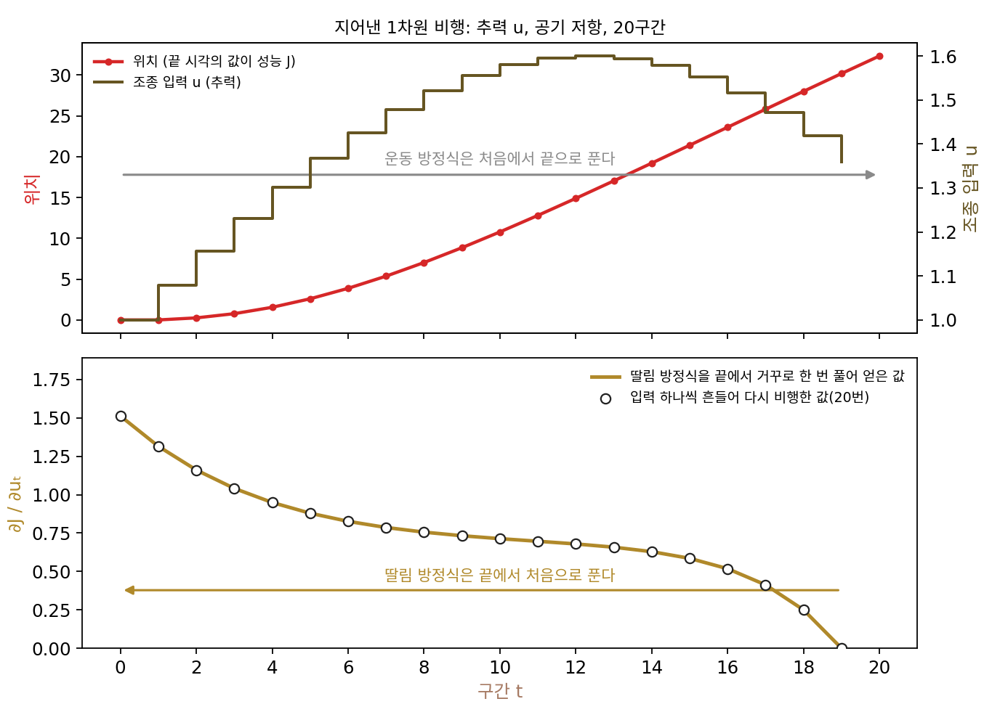
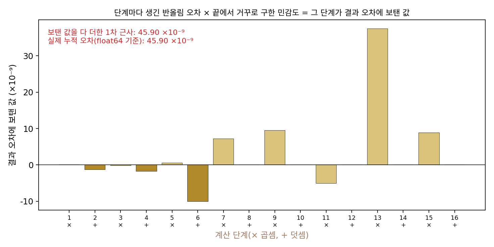
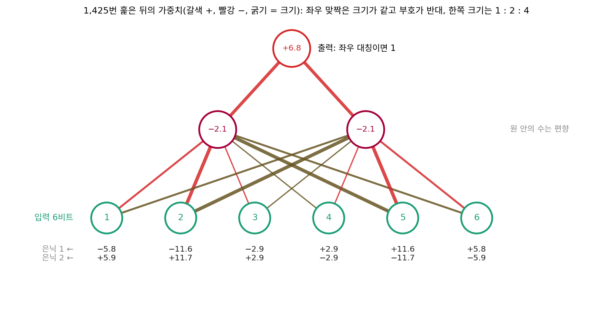
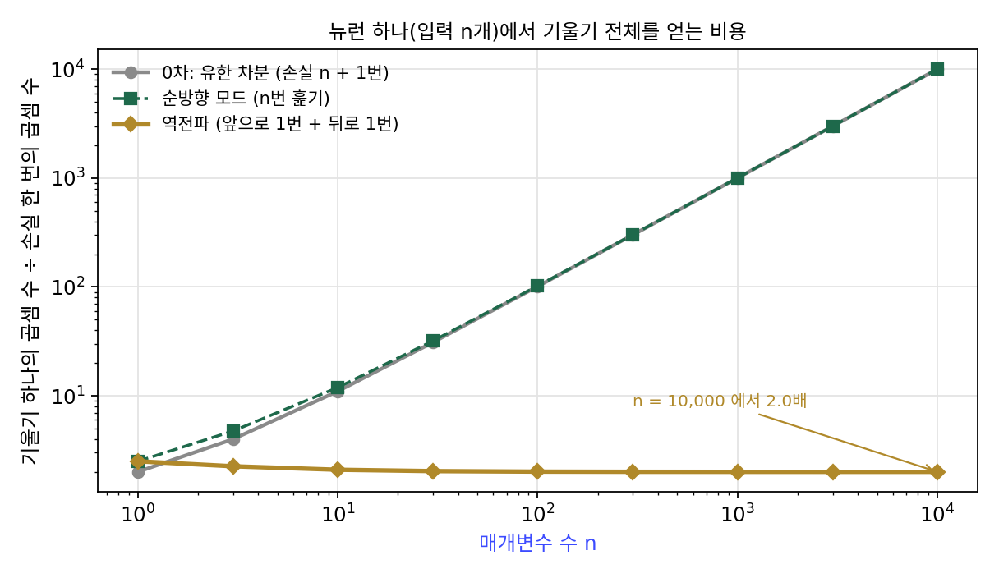
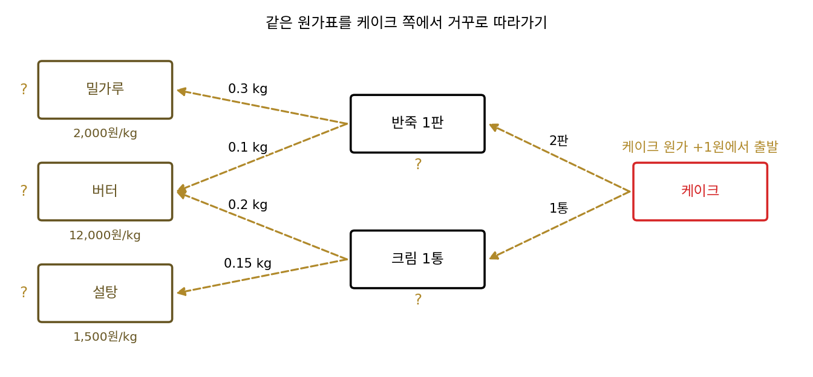
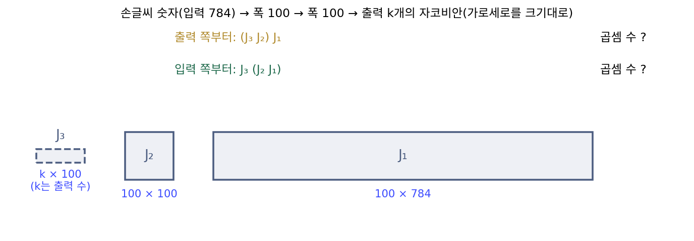
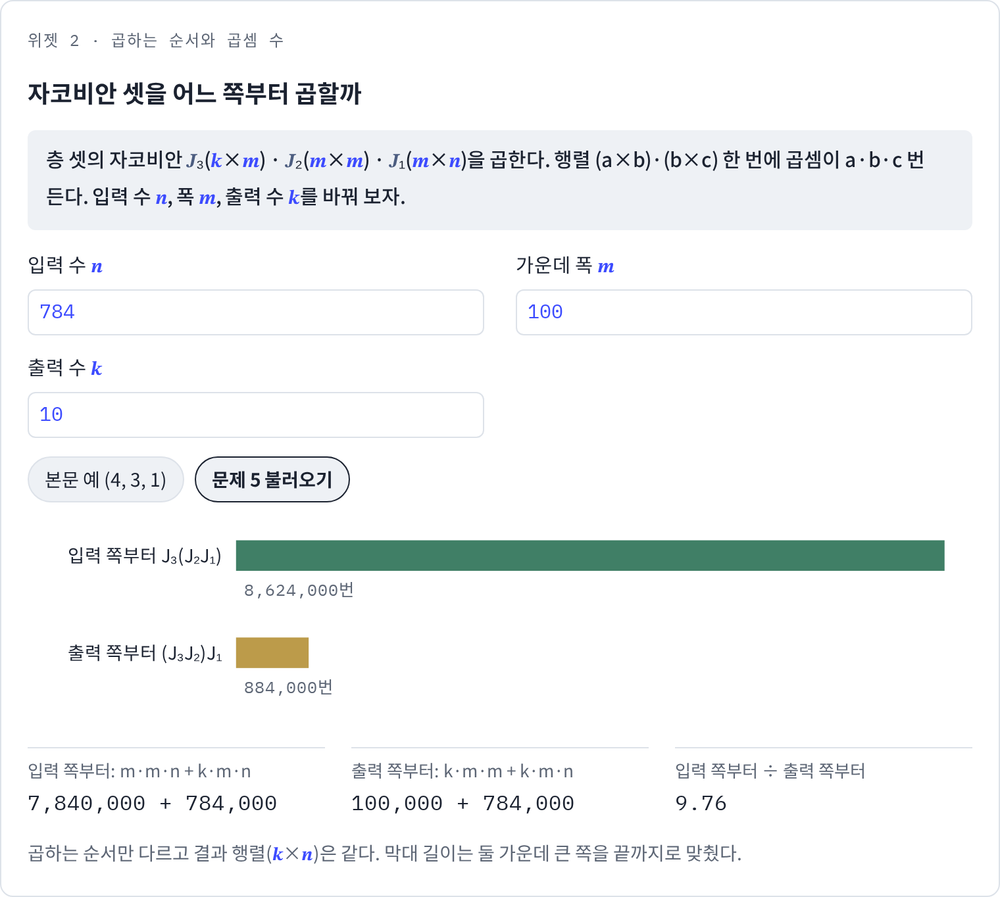
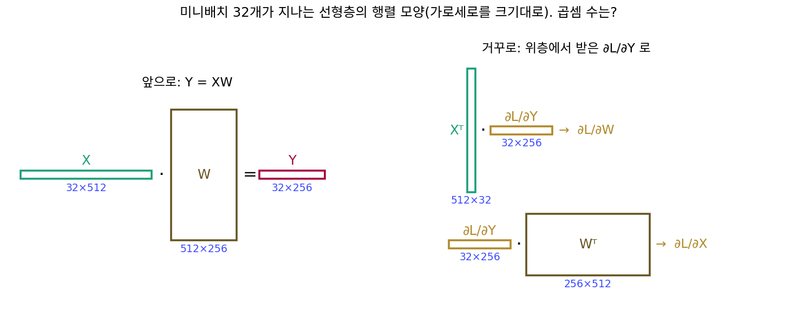

역전파: 출력 하나의 그래디언트를 뒤로 나눠 준다
순방향 모드(입력 하나에 대한 방향 미분을 앞으로 실어 나르는 방법)로 뉴런 하나의 그래디언트를 구할 때 뒤쪽 두 층의 곱셈을 세 번 되풀이했다. w₁ 방향이든 w₃ 방향이든 방향 미분이 z에 닿은 뒤에는 똑같이 1 − h² = 0.7864를 곱하고 h − y = −0.5379를 곱했다. 세 번 훑는 동안 뒤쪽 두 층의 곱은 세 번 다 같았으니, 손실은 하나뿐인데 입력마다 손실 칸까지 처음부터 다시 훑은 것이다. 뒤쪽의 공통된 곱을 한 번만 계산해 두고 입력마다 나눠 줄 수는 없을까? 그러려면 순방향 모드와 반대로, 손실 칸에서 출발해 입력 칸들까지 거슬러 내려가야 한다.
역사: 비행 경로, 반올림 오차, 그리고 신경망
출력 쪽에서 거꾸로 계산하는 생각은 신경망보다 먼저 여러 분야에서 따로 나왔는데, 그 하나가 로켓과 비행기의 경로를 다루는 제어 이론이다. 미국 그러먼 항공기 회사의 헨리 켈리(Henry J. Kelley)는 1960년 『ARS 저널』에 「최적 비행 경로의 그래디언트 이론(Gradient Theory of Optimal Flight Paths)」을 실었다. 비행 경로는 매 순간의 조종 입력이 정하는데 성능은 비행이 끝난 시각에 매겨진다. 켈리는 조종 입력에 대한 끝 시각 성능의 민감도를 구하려고, 운동 방정식의 계수 행렬을 전치하고 부호를 바꾼 「딸림 방정식」을 끝 시각의 경계값에서 출발해 풀었다. 예제는 태양 돛으로 지구 궤도에서 화성 궤도까지 가는 가장 빠른 길이었다. 같은 무렵 하버드의 아서 브라이슨(Arthur E. Bryson) 무리도 여러 단계를 거치는 과정에 같은 꼴의 그래디언트 방법을 냈고, 브라이슨은 뒤에 켈리와 자기 연구진이 1960~61년에 따로 이 방법을 만들었다고 회고했다. 뒤에 스튜어트 드레퓌스(Stuart Dreyfus)는 1990년 논문에서 이 「켈리–브라이슨 그래디언트 절차」가 신경망의 역전파와 같은 계산이라고 짚었다.

다른 하나는 반올림 오차다. 헬싱키 대학교의 세포 린나인마(Seppo Linnainmaa)는 1970년 핀란드어로 쓴 석사 논문 「알고리즘의 누적 반올림 오차를 각 반올림 오차의 테일러 전개로 나타내기」에서, 긴 계산의 끝에 쌓인 오차가 중간 단계 하나하나의 반올림 오차에 얼마나 민감한지를 구했다. 출력 하나(최종 결과)를 수많은 입력(단계마다의 오차)으로 미분하는 문제다. 그는 계산 과정을 그래프로 보고 끝에서부터 거꾸로 훑어 이 민감도를 한꺼번에 구했다. 이 생각을 오래 연구한 안드레아스 그리반크(Andreas Griewank)가 2012년에 쓴 글에 따르면, 린나인마는 그 생각이 1970년 코펜하겐의 어느 공원에서 볕 좋은 오후에 떠올랐다고 말한다. 그는 이것을 그래디언트를 싸게 구하는 방법으로 알리지 않았고, 결과의 일부를 영어로 낸 것도 1976년 『BIT』의 논문 「누적 반올림 오차의 테일러 전개」에서였다.

신경망으로 이 계산을 가져온 사람으로는 폴 워보스(Paul Werbos)가 꼽힌다. 그는 1974년 하버드 박사 논문 「회귀를 넘어서(Beyond Regression)」에서 여러 층을 거치는 모델의 미분을 끝에서부터 계산하는 법을 다뤘다. 그러나 이 방법이 널리 알려진 것은 1986년 10월 9일 『네이처』에 실린 네 쪽짜리 논문 뒤였다. 데이비드 러멜하트(David Rumelhart), 제프리 힌턴(Geoffrey Hinton), 로널드 윌리엄스(Ronald Williams)가 쓴 「오차를 거꾸로 전파해 표현을 배우기(Learning representations by back-propagating errors)」다. 그들은 출력층의 ∂E/∂y에서 시작해 한 층씩 아래로 내려가며 ∂E/∂w를 구하는 「거꾸로 가기(backward pass)」를 식으로 적었고, 같은 방법의 변형을 데이비드 파커(David Parker)와 얀 르쿤(Yann LeCun)도 따로 찾았다고 밝혔다.
이 논문이 보여 준 것은 계산법보다, 그 계산으로 학습한 은닉 단위가 무엇을 하게 되는가였다. 한 예는 6비트 입력이 좌우 대칭인지 가리는 문제였다. 입력 칸 하나만 봐서는 알 수 없는 성질이라 은닉 단위가 있어야 풀리는데, 논문의 망은 은닉 단위 둘로 풀었다. 64가지 입력을 1,425번 훑으며 학습한 뒤의 가중치는, 가운데를 사이에 두고 마주 보는 두 입력 칸(1번과 6번, 2번과 5번, 3번과 4번)의 가중치가 크기가 같고 부호가 반대였고, 한쪽 세 칸의 크기는 1 : 2 : 4였다. 그래서 대칭인 입력은 두 은닉 단위를 모두 끄고, 대칭이 아닌 입력은 한쪽 은닉 단위를 켜 출력을 끈다. 논문은 이 방법이 학습을 지역 극소에 가둘 수 있지만 여러 태스크에서 그런 일은 아주 드물었다고 적으면서, 태스크를 겨우 풀 만큼만 연결이 있는 망에서는 그런 일을 겪었다고 밝혔다. 맺음에서는 이 절차가 지금 꼴로는 뇌가 배우는 방식의 그럴듯한 모델이 아니라고 덧붙였다.


1960년에 켈리가 벌써 했고 1970년에 린나인마도 했는데, 신경망 학습의 표준이 되기까지 왜 26년이나 걸렸어요? 같은 계산이잖아요.

켈리가 거꾸로 푼 것은 무엇이었죠? 린나인마가 미분한 출력은요?

켈리는 비행 경로의 딸림 방정식이고, 린나인마는 계산 끝에 쌓인 반올림 오차요. 음, 둘 다 「신경망의 가중치」라는 말은 없네요.

같은 계산이라는 걸 누가 언제 짚었는지도 보세요. 드레퓌스가 켈리–브라이슨 절차와 역전파가 같다고 쓴 게 1990년, 1986년 논문보다 뒤예요. 린나인마의 결과는 핀란드어 석사 논문이었고, 그는 그것을 그래디언트를 싸게 얻는 방법으로 알리지도 않았고요.

아, 지금은 검색하면 「역전파는 역방향 자동미분」이 바로 나오는데, 그때는 분야마다 문제도 말도 달라서 세 결과를 이어 줄 사람이 없었던 거네요.
그리고 1986년 논문이 보여 준 건 계산법보다 무엇이었다고 했죠?

학습한 은닉 단위가 좌우 대칭을 가리는 법을 스스로 찾았다는 거요. 계산이 싸다는 것만으로는 모자랐고, 그 계산으로 은닉층을 학습시키면 쓸모 있는 표현이 나온다는 걸 보여야 했네요.

그런데 켈리도 린나인마도 끝에서부터 거꾸로 풀었다는 건 같잖아요. 뉴런 하나에서 세 번 되풀이한 뒤쪽 두 층의 곱을, 거꾸로 가면 정말 한 번만 계산하게 되나요?
같은 뉴런을 거꾸로 훑기
순방향 모드에서 쓴 뉴런 하나짜리 계산 그래프(x = (2, −1, 1), y = 1, w = (0.3, 0.2, 0.1))로 돌아가자. 값을 앞으로 계산해 z = 0.5, h = 0.4621, L = 0.1447을 얻은 데까지는 같다. 이번에는 입력에 1을 넣는 대신, 칸마다 「그 칸의 값이 조금 바뀌면 손실이 얼마나 바뀌나」, 곧 손실을 그 칸으로 미분한 값을 출력 쪽에서부터 적어 내려간다. 손실 칸에서는 ∂L/∂L = 1이다. 손실 칸 바로 앞의 h에서는 ∂L/∂h = h − y = −0.5379, 그 앞의 z에서는 여기에 tanh의 국소 미분 1 − h² = 0.7864를 곱해 ∂L/∂z = −0.4230이다. 덧셈 칸 z는 받은 값을 세 곱셈 칸에 그대로 나눠 주고, 곱셈 칸 wᵢxᵢ는 받은 값에 xᵢ를 곱해 wᵢ에게 넘긴다.
z̄ = −0.4230이 한 번 계산되면, 세 그래디언트는 xᵢ를 한 번씩 곱하는 것으로 끝난다: w̄₁ = 2 × (−0.4230) = −0.8460, w̄₂ = 0.4230, w̄₃ = −0.4230. 순방향 모드가 세 번 훑어 얻은 값과 같다. 곱셈은 h̄에서 1번(1 × (h − y)), z̄에서 1번, 곱셈 칸 셋에서 3번, 모두 5번이다. 순방향 모드는 같은 길을 세 번 훑어 15번이었고, 거꾸로는 한 번만 훑으니 5번이다.
이렇게 값을 앞으로 한 번 계산해 둔 뒤, 출력에 1을 놓고 칸마다 「들어온 그래디언트 × 국소 미분값」을 출력 쪽부터 거꾸로 나눠 주어 모든 입력의 그래디언트를 한 번에 얻는 방법을 역전파 (뒤에서부터 그래디언트 나눠 주기 / backpropagation, reverse-mode differentiation)라 한다. 자동미분 분야에서는 같은 계산을 역방향 모드라 부르고, 신경망에서는 역전파라 부른다. 입력이 n개인 뉴런이면 곱셈은 n + 2번이라, n = 1,000,000이어도 1,000,002번이다. 순방향 모드의 1,000,002,000,000번과 비교하면 백만 배 차이다.
층이 셋인 계산의 그래디언트는 층마다의 자코비안을 곱한 것이어서, 같은 이야기를 자코비안으로 적으면 「어느 끝부터 곱하나」가 드러난다.
행렬 곱 (a×b)·(b×c)에는 곱셈이 a·b·c번 든다. 입력 n = 4, 폭 m = 3인 작은 예에서 입력 쪽부터 곱하면 J₂J₁(3×3 곱하기 3×4)에 36번, 그렇게 얻은 3×4 행렬에 J₃를 곱하는 데 12번, 모두 48번이다. 출력 쪽부터 곱하면 J₃J₂(1×3 곱하기 3×3)에 9번, 그렇게 얻은 1×3 행렬에 J₁을 곱하는 데 12번, 모두 21번이다. 출력 쪽부터 곱하면 늘 「행 하나짜리 벡터 × 행렬」만 한다. 순방향 모드는 입력 쪽부터 곱하는 순서이고 역전파는 출력 쪽부터 곱하는 순서이며, 두 순서는 결과가 같고 곱셈 수만 다르다. 자코비안이 둘이면 곱하는 순서가 하나뿐이고 셋부터 순서를 고를 수 있기 때문에, 장난감의 층을 셋으로 잡았다.
ML에서: loss.backward() 한 줄과 이 책의 지도
파이토치의 loss.backward()가 하는 일이 이 절의 계산이다. 앞으로 계산하는 동안 칸마다 국소 미분에 필요한 값을 남겨 두고, 손실에 1을 놓은 뒤 계산 그래프를 거꾸로 훑어 파라미터마다 .grad에 그래디언트를 채운다. 파라미터가 몇 개든 거꾸로 훑기는 한 번이다.
최적화 연구자 필 울프(Phil Wolfe)는 1982년에 「함수와 그 그래디언트를 계산하는 비용이 함수만 계산하는 비용의 (n + 1)배라는 것은 흔한 오해다. 함수와 도함수에 공통된 양을 잘 다루면 두 비용의 비는 보통 1.5배이지 (n + 1)배가 아니다」라고 적었다. 뉴런 하나짜리 장난감에서 곱셈을 세어 보아도 그렇다. 손실을 한 번 계산하는 곱셈(wᵢxᵢ에서 n번, 제곱에서 1번)을 1로 놓으면, 역전파로 그래디언트 전체를 얻는 비용은 n = 10,000에서 2.0배이고 n이 커져도 2배 근처에 머문다. 0차 방법인 유한 차분과 순방향 모드는 n에 비례해 커진다.

이 그림이 이 책의 지도에서 역전파가 서 있는 자리다. 0차 방법은 손실값만 쓰므로 그래디언트를 근사하는 데 파라미터 수만큼의 손실 계산이 들었다. 역전파는 손실 계산의 몇 배라는 고정된 값으로 정확한 그래디언트를 내준다. 그래서 파라미터가 수십억 개인 모델도 스텝마다 그래디언트를 쓰는 1차 방법으로 학습할 수 있다. 역전파는 그 자체로 최적화 방법이 되지 못하고, 1차 최적화에 그래디언트를 대 주는 장치다. 그래디언트를 받아 어느 쪽으로 얼마나 움직일지는 옵티마이저가 정하고, 2차 미분을 모은 헤시안까지 쓰려면 다시 값이 크게 뛴다.
문제 4. 빵집 원가표를 거꾸로
문제 1의 빵집(케이크 = 반죽 2판 + 크림 1통, 반죽 = 밀가루 0.3 kg + 버터 0.1 kg, 크림 = 버터 0.2 kg + 설탕 0.15 kg)에서, 이번에는 케이크 쪽에서 출발한다. (가) 반죽 1판 값이 1원 오르면 케이크 원가는 몇 원 오르는가? 크림 1통은? (나) 그 두 값에서 세 재료 각각의 「1원당 케이크 원가 변화」를 구하라. (다) 원가표를 몇 번 훑었고, 곱셈은 몇 번인가? 문제 1과 견줘라.

(가)는 반죽이 두 판 들어가니까 2원, 크림은 1원이야. (나)는 밀가루가 반죽에 0.3 kg 들어가니까 2 × 0.3 = 0.6원, 설탕은 1 × 0.15 = 0.15원.
버터는요? 버터는 들어가는 곳이 두 군데죠.
반죽에서 2 × 0.1 = 0.2원, 크림에서 1 × 0.2 = 0.2원이 와요. 두 곳에서 받은 걸 더해서 0.4원이요.
한 곳에서만 받으면 어떻게 될까요?
반죽 쪽만 받으면 0.2원이라 버터가 실제보다 반만 중요해 보여요. 버터 값이 1원 오를 때 크림 원가도 같이 오르는 걸 놓치는 거니까, 쓰인 곳마다 온 걸 다 더해야 해요.
그런데 답이 문제 1과 똑같이 0.6, 0.4, 0.15예요. 몇 번 훑었는지는 달라요?
케이크에서 반죽·크림으로 한 번, 거기서 재료로 한 번 내려왔을 뿐이야. 곱셈은 반죽 칸에서 1번(1 × 2), 재료 쪽으로 넘기는 데 4번, 모두 5번. 문제 1은 15번이었어.
재료가 백 가지로 늘면 두 방법은 어떻게 달라질까요?

앞에서부터는 재료마다 한 번, 백 번 훑어야 해요. 뒤에서부터는 케이크가 하나니까 여전히 한 번이에요. 「반죽 1판이 케이크에 얼마나 중요한가(2원)」를 한 번 구해 두고, 반죽에 들어가는 재료들이 그걸 나눠 쓰니까요.
문제 5. 곱하는 순서와 출력의 수
손글씨 숫자 그림(입력 n = 784)을 폭 m = 100인 층 둘을 거쳐 출력 k개로 보내는 계산이 있다. 자코비안은 J₁(100×784), J₂(100×100), J₃(k×100)이다. (가) k = 1(손실 하나)일 때 입력 쪽부터 곱하는 순서와 출력 쪽부터 곱하는 순서의 곱셈 수는? (나) k = 10이면? (다) 두 순서의 곱셈 수가 같아지는 k는 얼마이고, 그보다 크면 어느 쪽이 싼가? (풀어 본 뒤 위젯 2의 「문제 5 불러오기」로 확인해 보자.)

(가)는 입력 쪽부터면 100 × 100 × 784 + 1 × 100 × 784 = 7,918,400번, 출력 쪽부터면 1 × 100 × 100 + 1 × 100 × 784 = 88,400번이야. 거의 아흔 배네. 그러면 언제나 출력 쪽부터 곱하면 되겠다.
(나)에서 k를 10으로 늘려 볼까요?
입력 쪽부터 8,624,000번, 출력 쪽부터 884,000번이요. 아직 출력 쪽이 싸지만 차이가 줄었어요. 출력 쪽부터의 곱셈 수가 k에 정비례해서 열 배가 됐어요.

차이가 준다는 건 어딘가에서 뒤집힐 수도 있다는 거네. 숫자 대신 글자로 써 볼게. 입력 쪽부터는 m²n + kmn, 출력 쪽부터는 km² + kmn이야.
뒤의 항 kmn은 둘이 똑같네?
응, 그러니까 앞의 항만 비교하면 돼. 차이는 m²(n − k)야. k = n = 784에서 둘 다 69,305,600번으로 같아져.

k가 784보다 크면요? 1,000으로 해 보세요.

입력 쪽부터 86,240,000번, 출력 쪽부터 88,400,000번이에요. 이번엔 입력 쪽부터가 싸요!

내가 (가) 하나만 보고 「언제나」라고 했네. 어느 쪽부터 곱할지는 출력 수와 입력 수가 정하는 거였어. 출력이 입력보다 적으면 거꾸로가 싸.
학습에서는 어느 쪽이 이기죠?
손실은 출력이 하나니까 늘 거꾸로요. 선형대수 시간에 행렬 여러 개를 곱할 때 괄호를 어디에 치느냐로 계산량이 달라진다고 배운 게 이 얘기였어요.
문제 2(입력 하나, 출력 셋)에서 「입력이 적고 출력이 많으면 앞으로가 낫다」던 게 숫자로 나왔네요.

문제 6. 선형층 하나의 앞뒤 곱셈 수
선형층 Y = XW가 있다. X는 미니배치 32개의 입력(32×512), W는 가중치(512×256)다. 거꾸로 가기에서는 위층에서 ∂L/∂Y(32×256)를 받아 ∂L/∂W = Xᵀ(∂L/∂Y)와 ∂L/∂X = (∂L/∂Y)Wᵀ를 계산한다. (가) 앞으로 가기의 곱셈 수는? (나) 거꾸로 가기의 곱셈 수는? (다) 학습 한 스텝은 앞으로 가기의 몇 배인가? 큰 언어 모델의 학습 계산량을 왜 「파라미터 수 N × 토큰 수 × 6」으로 대략 잡는지 이것으로 설명해 보라.

(가)는 32 × 512 × 256 = 4,194,304번이요.
(나)는 ∂L/∂W = Xᵀ(∂L/∂Y)만 구하면 되잖아. 512×32 곱하기 32×256이니까 같은 수, 4,194,304번이야. 그럼 한 스텝이 앞으로의 2배네.
이 층 아래에 층이 하나 더 있다면, 그 층은 무엇을 받아야 거꾸로 가기를 할 수 있죠?
아래층은 자기 출력에 대한 그래디언트를 받아야 하는데, 아래층의 출력이 이 층의 입력 X니까… ∂L/∂X요?
아, 그것도 이 층이 만들어 넘겨야 하는구나. (∂L/∂Y)Wᵀ는 32×256 곱하기 256×512라서 또 4,194,304번이야. 거꾸로 가기는 8,388,608번이고, 한 스텝은 4,194,304 + 8,388,608 = 12,582,912번으로 앞으로의 3배야.
이 층이 그래디언트를 두 군데에 줘야 하는 거네. 자기 파라미터 W, 그리고 아래층으로 이어지는 입력 X.
곱셈 한 번과 덧셈 한 번을 묶어 계산 2번(2 FLOP)으로 세면, 파라미터 N개짜리 모델이 토큰 하나를 앞으로 지날 때 얼마죠?
파라미터 하나가 곱셈–덧셈 한 쌍에 한 번씩 쓰이니까 앞으로 2N이요.
거꾸로 지날 때는요?
방금 이 층에서 거꾸로 가기가 앞으로의 두 배였으니까 4N, 합쳐서 6N이에요. 모델 크기·데이터 양과 성능의 관계를 잰 캐플런과 동료들의 2020년 논문(스케일링 법칙)이 학습 계산량을 토큰당 6N으로 잡은 게 이 계산이었네요. 학습이 추론보다 세 배 무거운 것도요.